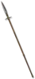

The Dragon Chang
Spear
Damage: 3-15 (two-handed)
Required Level: 8
+35 to Attack Rating
Adds 10-15 Damage
+2 to Light Radius
+100% Damage to Undead
Adds 3-6 Fire Damage
+10 to Minimum Damage
+70-100% Enhanced Weapon Damage
Unique Spear
The Dragon Chang
- Type
- Spear
- Base
- Spear
- Tier
- Normal
- Required level
- 8
- Item level
- 1
- Required dexterity
- 20
- Max sockets
- 3